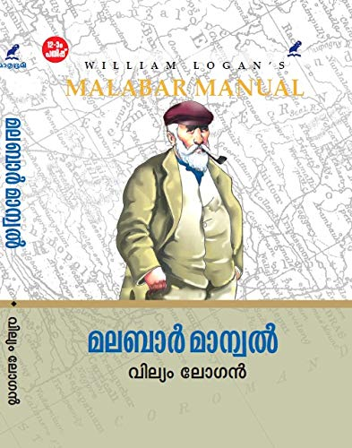
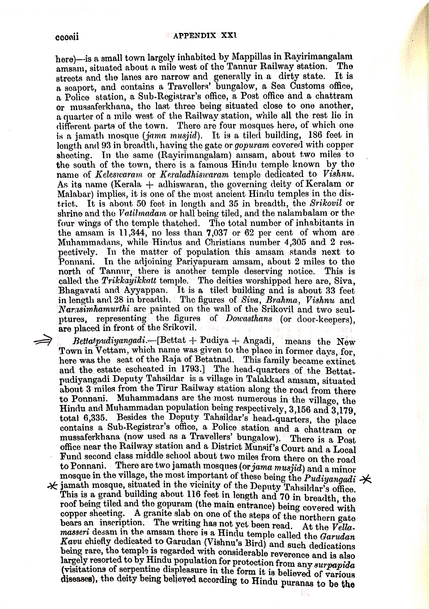

ഖാദിമുൽ ഇസ്ലാം സഭ - BP അങ്ങാടി
മഹല്ലിനെ കുറിച്ച് വിശദമായി
മഹല്ലിനെ കുറിച്ച് വിശദമായി

വെട്ടത്ത് പുതിയങ്ങാടി വലിയ ജുമുഅത്ത് പള്ളി മലബാറിലെ ഏറ്റവും പഴക്കമുള്ള പള്ളികളിലൊന്നാണ്. ഏകദേശം 600 വർഷം പഴക്കമുണ്ടെന്നാണ് കണക്കാക്കപ്പെടുന്നത്. 1926-ൽ രൂപം കൊണ്ട സമസ്ത കേരള ജംഇയ്യത്തുൽ ഉലമയിൽ ആദ്യമായി രജിസ്റ്റർ ചെയ്ത പള്ളികളിൽ ഒന്നാണ്.പഴയ കാലത്ത് വെട്ടത്തു പുതിയങ്ങാടി വലിയ ജുമാഅത്തു പള്ളി എന്ന് അറിയപ്പെട്ടിരുന്ന ഇപ്പോഴത്തെ ബി പി അങ്ങാടി തെക്കെ ജുമാഅത്ത് പള്ളി മലബാറിലെ പുരാതന മസ്ജിദ്കളിൽ ഉൾപെടുന്നു. ബ്രിട്ടീഷ് കാലത്തെ മലബാർ കളക്ടർ ആയിരുന്ന വില്യം ലോഗൻ 1887 ൽ പ്രസിദ്ധീകരിച്ച മലബാർ മാന്വൽ എന്ന ചരിത്ര ഗ്രന്ഥത്തിൽ ഈ പള്ളിയെ പറ്റി പ്രതിപാദിക്കുന്നുണ്ട്. 1766ൽ മൈസൂർ രാജാവ് ഹൈദരലി ഖാൻ വെട്ടത്ത് പുതിയങ്ങാടിയിൽ വെച്ച് സാമൂതിരിയുടെ നായർപ്പടയുമായി ഘോരയുദ്ധം നടത്തിയ സംഭവം ലോഗൻ തന്റെ ചരിത്ര ഗ്രന്ഥത്തിൽ പരാമർശിച്ചിട്ടുണ്ട്. ആ യുദ്ധത്തിൽ മരണപ്പെട്ട മുസ്ലിംകളുടെ മയ്യിത്ത് ബി പി അങ്ങാടി ഖബർസ്ഥാനിൽ ആണ് അടക്കപ്പെട്ടിട്ടുള്ളത്. ഇതാണ് ഖബറ്സ്ഥാന്റെ വടക്ക് പടിഞ്ഞാറ് ഭാഗത്ത് സ്ഥിതി ചെയ്യുന്ന പഠാണി ശുഹദാക്കളുടെ ഖബറിടം.

ബി പി അങ്ങാടി ജുമാമസ്ജിദിന്റെ അറിയപ്പെടുന്ന ആദ്യത്തെ പുതുക്കിപ്പണിയൽ നടന്നത് ബഹു. സൈനുദ്ദീൻ മഖ്ദൂമിന്റെ കാലത്താണ്. (1467- 1521). ഏറ്റവും അടുത്ത പുനർനിർമ്മാണം 1984 -86 കാലത്ത് നടന്നു. 1986 ഏപ്രിൽ 21 അസർ നമസ്ക്കാരത്തിന് നേതൃത്വം നൽകി അന്നത്തെ ഖാസി ബഹു. സയ്യിദ് മുഹമ്മദലി ശിഹാബ് തങ്ങൾ നിർവ്വഹിച്ചു.
രണ്ടായിരത്തിലധികം വരുന്ന വീടുകളുള്ള ബി പി അങ്ങാടി മഹല്ല് തിരൂർ താലൂക്കിലെ വലിയ മഹല്ലുകളിലൊന്നാണ്. ഖാദിമുൽ ഇസ്ലാം സഭയാണ് ഈ മഹല്ലിന് നേതൃത്വം നൽകുന്നത്.
ദീർഘകാലം പുതിയങ്ങാടി ജുമാഅത്തു പള്ളിയിൽ ദറസ് നടത്തിയിരുന്ന വലിയ ശിഷ്യ സമ്പതുള്ള പണ്ഡിത ശ്രേഷ്ഠൻ പോക്കർ മുസ്ലിയാർ ഈ പള്ളിയുടെ ചാരത്തെ ഖബ്ർസ്താനിൽ തന്നെയാണ് അന്ത്യ വിശ്രമം കൊള്ളുന്നതു.
ഖാദിമുൽ ഇസ്ലാം സഭ BP അങ്ങാടി മഹല്ലിന്റെ ഭരണ സമിതിയാണ്. മഹല്ല് ഭരണം, വിദ്യാഭ്യാസം, സാമൂഹിക സേവനം, ആരാധനാലയ പരിപാലനം എന്നിവയിൽ സഭ മുൻപന്തിയിൽ പ്രവർത്തിക്കുന്നു.
സുന്നി ആദർശത്തിൽ ഉറച്ച് നിന്ന് കൊണ്ട് സമസ്തയുടെ കീഴിൽ ഖാദിമുൽ ഇസ്ലാം സഭ ഇപ്പോഴും ഒരു ഭിന്നിപ്പും കൂടാതെ പ്രവർത്തിക്കുന്നു. ഖാദിമുൽ ഇസ്ലാം സഭയെ കേന്ദ്രമാക്കി ഇപ്പോഴും മഹല്ലിൽ 11 പള്ളികളുണ്ട്. അതത് പ്രദേശത്തെ പ്രാദേശിക കമ്മിറ്റികൾ പള്ളി പരിപാലനം നടത്തുന്നു.
ആദ്യകാല ഭാരവാഹികൾ : കെ പി ഖാദർ സാഹിബ്, നാലകത്ത് കുഞ്ഞാലി സാഹിബ്, നാലകത്ത് ബീരാൻ സാഹിബ്, കെ പി ബാവക്കുട്ടി ഹാജി, കടവത്ത് അബ്ദുൽ ഹാജി, നാലകത്ത് മുഹമ്മദ് ഹാജി, മണ്ണശംവീട്ടിൽ അബ്ദുല്ല സാഹിബ്, വി ടി കരീം ഹാജി, എൻ മുഹമ്മദ് മാസ്റ്റർ, കടവത്ത് സൂപ്പി ഹാജി, പി കാദർ കുട്ടി മാസ്റ്റർ, കെ മുഹമ്മദ് കുട്ടി മാസ്റ്റർ, കെ പി സൈതാലിക്കുട്ടി എന്ന ശാ മാസ്റ്റർ.

BP അങ്ങാടി ജുമാ മസ്ജിദ് 600 വർഷത്തിലധികം പഴക്കമുള്ള ഒരു ചരിത്ര പ്രാധാന്യമുള്ള പള്ളിയാണ്. അഞ്ച് നേരത്തെ ജമാഅത്ത് നമസ്കാരവും ജുമുഅ ഖുത്ബയും ഇവിടെ നടക്കുന്നു.

മഹല്ലിന് കീഴിൽ മദ്രസ, സ്കൂൾ എന്നിവ പ്രവർത്തിക്കുന്നു. നൂറുകണക്കിന് വിദ്യാർത്ഥികൾ ഇവിടെ പഠനം നടത്തുന്നു.
📧 Email: kisbpa@gmail.com
📞 Phone: 9074868241
📍 BP അങ്ങാടി, തിരൂർ, മലപ്പുറം, കേരളം